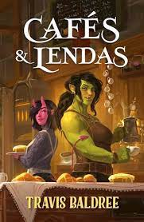
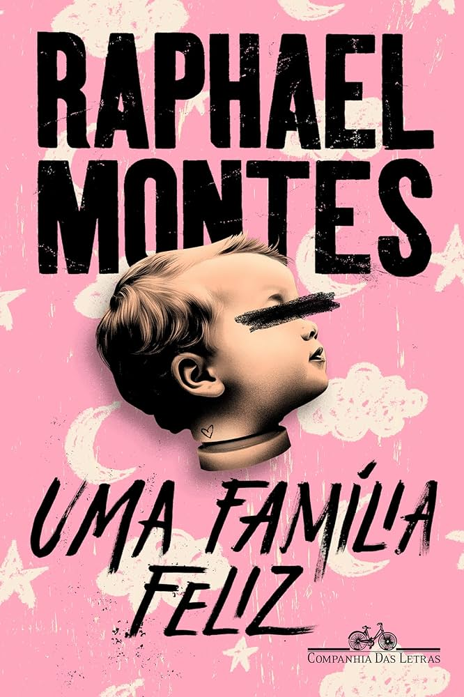

LANÇAMENTOS
DE 2014
Misery Lark, filha do vampiro mais poderoso do sudoeste, nunca foi bem-vista pelos seres de sua espécie. Ela passa seus dias anonimamente em meio aos humanos, isolada, até que é chamada para firmar um acordo de paz entre vampiros e licanos, seus inimigos mortais. Para isso, será obrigada a se casar com Lowe Moreland. Licanos são lobisomens cruéis e imprevisíveis, e o alfa do bando, Lowe, não é exceção. Ele governa o grupo com autoridade absoluta, mas também com justiça. Pela forma como acompanha cada passo de Misery, fica claro que não confia nela. E ele não poderia estar mais certo…
|  |  | Café & Lendas |
Está tudo bem |
Uma Famìlia Feliz |
|---|---|---|
| Travis Baldree (11/03/2024) | Cecilia Rabess (12/03/2024) | Raphael Montes (13/03/2024) |